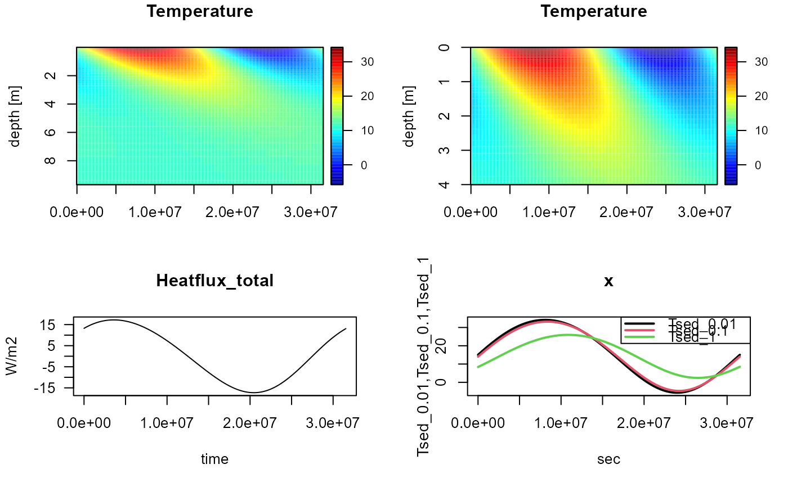

TempSED_run1D.RdTempSED_run1D calculates temperature in a vertical sediment column of 100 layers.
TempSED_run1D (parms = list(), times = 1:3600, T_ini = 10,
z_max = 10, dz_1 = 1e-3,
Grid = setup.grid.1D(N = 100, dx.1 = dz_1, L = z_max),
porosity = 0.5, irrigation = 0,
f_Waterheight = 0, f_Watertemperature = 10,
f_Airtemperature = 10, f_Airhumidity = 0.3,
f_Pressure = 101325, f_Solarradiation = 100,
f_Windspeed = 1, f_Cloudiness = 0.5,
dependency_on_T = FALSE,
sedpos = NULL, verbose = FALSE, dtmax = 3600)A list with parameter values. Available parameters can be listed using function TempSED_getparms. See details, and TempSED_getparms.
The total length of the vertical sediment column (z-axis), one number [m].
Size of the first grid cell [m].
The other grid cells will have exponentially changing sizes so that the total sediment length will be = z_max.
There are 100 grid cells.
list with the specification of the one-dimensional grid; axis pointing downward. It should contain the following elements: x.mid with the positions in the middle of the grid cells (length 100); x.int with the positions at the grid interfaces (length 101); dx and dx.aux should contain the cell thickness (length 100), and the distance between the middle of the cells (length 101) respectively.
Initial temperature distribution (at start of the run), [dgC].
One number, a vector of length 100, a function that takes sediment depth as argument, or an object generated with TempSED_run1D.
In the latter case, the final temperature values in this object will be used as initial values.
Output times for the dynamic run.
volumetric water content (volume water/volume bulk), [-].
One number or a vector of length 101 (porosity defined at the box interfaces).
Also allowed is a function that has as argument sediment depth (in m).
The irrigation rate [/d], one value or a vector of length 100.
Also allowed is a function that has as argument sediment depth (in m).
The height of the overlying water, [m].
Either one value, a function that takes time as argument, or a two-columned matrix with (time, value).
Note that in the latter case the time (first column) should embrace the output times. See details.
The temperature of the overlying water, [dgC].
Either one value, a function that takes time as argument, or a two-columned matrix with (time, value).
Note that in the latter case the time (first column) should embrace the output times. See details.
The temperature of the air, [dgC].
Either one value, a function that takes time as argument, or a two-columned matrix with (time, value).
Note that in the latter case the time (first column) should embrace the output times. See details.
The humidity of the air, as a fraction of saturation [-], inbetween (0,1).
Either one value, a function that takes time as argument, or a two-columned matrix with (time, value).
Note that in the latter case the time (first column) should embrace the output times. See details.
The atmospheric pressure, [Pa].
Either one value, a function that takes time as argument, or a two-columned matrix with (time, value).
Note that in the latter case the time (first column) should embrace the output times. See details.
The shortwave radiation, [W/m2].
Either one value, a function that takes time as argument, or a two-columned matrix with (time, value).
Note that in the latter case the time (first column) should embrace the output times. See details.
The velocity of the wind, estimated 10m above the surface, [m/s].
Either one value, a function that takes time as argument, or a two-columned matrix with (time, value).
Note that in the latter case the time (first column) should embrace the output times. See details.
The fraction of the sky covered by clouds [-], inbetween (0,1).
Either one value, a function that takes time as argument, or a two-columned matrix with (time, value).
Note that in the latter case the time (first column) should embrace the output times. See details.
if TRUE, will calculate water properties at each time step as a function of temperature (for testing)
A vector of sediment depths (in m) at which temperature output is wanted.
If not NULL, then the output matrix will contain an extra column for each value in sedpos, and which are called "Tsed_.." where .. is the value in sedpos.
See first example.
If TRUE, will write output to the screen in case the solver (vode) encountered problems.
Maximum time step - setting this too high may lead to numerical instabilities. Too low timesteps will make the simulation very slow.
A matrix of class TempSEDdyn and deSolve, as generated by the solver from R-package deSolve (ode.1D).
It contains several output columns, the first is time, followed by 100 columns that represent the temperature in the sediment layers. The other variables are zero-dimensional variables - use TempSED_get0Dvars() to see what they represent.
The **parameters** that can be specified with argument parms are:
em_air, em_sediment Emissivity of the air (em_air) and emissivity of Water/sediment (em_sediment); unitless.
stanton, dalton Transfer coeff for sensible heat (stanton) and for latent heat (dalton); unitless.
density_water, density_solid Water density (dens_water) and sediment dry density (dens_solid); [kg/m3].
cp_water, cp_solid Specific heat capacity of the water (cp_water) and of solid sediment (cp_Solid) [J/kg/dgC].
tc_water, tc_solid The thermal conductivity of the water (tc_water) and of the solid sediment (tc_solid) [W/m/dg].
albedo_water, albedo_sediment The part of the shortwave radiation refracted by the overlying water (albedo_water), or the sediment (albedo_sediment), one number, inbetween (0,1) [-].
kd_water, kd_sediment The light extinction coefficient in the overlying water (kd_water), or the bulk sediment (kd_sediment) [/m].
==========
The **units** of the temperature model are [seconds], [m] and degree Celsius.
==========
The **sediment column** is subdivided in 100 layers, the total length is defined by argument z_max,
the size of the first box is defined by argument dz_1.
The size of the boxes increases exponentially.
==========
The **forcing functions** f_Waterheight, f_Watertemperature, f_Airtemperature,
f_Airhumidity, f_Pressure, f_Solarradiation, f_Windspeed, f_Cloudiness can
be prescribed either as a constant, as a function, or as a data series.
Forcing functions imposed by a data series should be a two-columned
matrix with times (first column) and values (second column).
The values should be in the correct units.
The time series should embrace the requested output times (argument times).
When prescribed by a function, the function should have as argument "time"
and return one value, (in the correct units). Note that, before calling the fortran code,
the forcing function will be evaluated for at most 10000 time values.
Thus, if fF is the forcing function, then it will be evaluated as fF(ftimes), where
ftimes = times[1]:times[length(times)] in case diff(range(times)) < 1e4 or
ftimes <- seq(from=times[1], to=times[length(times)], length.out=10000).
If this is too detailed or not detailed enough, then it is advised to pass the
forcing as a data series rather than as a function.
==========
The model is implemented in fortran for speed; the integration is done with *vode* from deSolve. Due to forcing functions that may change very rapidly, this model can become difficiult to solve, even with vode. If that happens, set dtmax to a lower value, OR smooth the forcings.
to be added
# ---------------------------------------------------------
# Show the parameter settings
# ---------------------------------------------------------
TempSED_getparms()
#> parms units
#> S 35.0000 -
#> em_air 0.8000 -
#> em_sediment 0.9500 -
#> albedo_water 0.0500 -
#> albedo_sediment 0.1500 -
#> kd_water 1.0000 /m
#> kd_sediment 1000.0000 /m
#> cp_water 3994.0000 J/kg/dgC
#> cp_solid 1000.0000 J/kg/dgC
#> tc_water 0.6000 W/m/dg
#> tc_solid 2.1000 W/m/dg
#> density_water 1024.0000 kg/m3
#> density_solid 2500.0000 kg/m3
#> stanton 0.0010 -
#> dalton 0.0014 -
#> description
#> S Salinity of water and bulk sediment
#> em_air Emissivity of air
#> em_sediment Emissivity of Water/sediment
#> albedo_water Part light refracted by water
#> albedo_sediment Part light refracted by sediment
#> kd_water Light attenuation coefficient water
#> kd_sediment Light attenuation coefficient (bulk) sediment
#> cp_water Specific heat capacity water
#> cp_solid Specific heat capacity solid sediment
#> tc_water Thermal conductivity of water
#> tc_solid Thermal conductivity of solid
#> density_water Reference seawater density
#> density_solid Sediment dry density
#> stanton Transfer coeff for sensible heat
#> dalton Transfer coeff for latent heat
#==========================================================
# Application 1: SEASONAL VARIATION - EXPOSED TO AIR
#==========================================================
# Forcing functions for air temperature (dgC)
# and solar radiation (W/m2), yearly period
fAirTempYr <- function(t)
return(15 + 15*sin(2*pi*t/86400/365))
fSolarRadYr <- function(t)
return(150 + 120*sin(2*pi*t/86400/365))
# 1. spinup run
# ----------------
times <- seq(from = 0, to = 365*86400, by = 86400)
print(system.time(
ToutIni <- TempSED_run1D(
T_ini = 10,
times = times,
f_Airtemperature = fAirTempYr,
f_Solarradiation = fSolarRadYr)
))
#> user system elapsed
#> 0.10 0.00 0.09
# 2. final run
# ----------------
# request output at 1cm, 1dm, and 1m (sedpos).
ToutYr <- TempSED_run1D(
T_ini = ToutIni,
times = times,
f_Airtemperature = fAirTempYr,
f_Solarradiation = fSolarRadYr,
sedpos = c(0.01, 0.1, 1))
par(mfrow = c(2,2)) # arrangement of the figures
# time-depth plot
# ----------------
image2D(ToutYr, mfrow = NULL) # mfrow=NULL prevents mfrow to be reset
#> Warning: 'x' is NULL so the result will be NULL
image2D(ToutYr, ylim = c(4, 0), mfrow = NULL) # zoom in
#> Warning: 'x' is NULL so the result will be NULL
# temporal plots
# ----------------
plot (ToutYr,
which = "Heatflux_total",
mfrow = NULL)
matplot0D(ToutYr,
which = c("Tsed_0.01", "Tsed_0.1", "Tsed_1"),
lty = 1, lwd = 2, mfrow = NULL)

#==========================================================
# Application 2: SEASONAL VARIATION - SUBMERGED
#==========================================================
# Forcing functions for water temperature; yearly period
fWaterTempYr <- function(t)
return(10 + 8*sin(2*pi*t/86400/365))
times <- seq(from = 0, to = 365*86400, by = 86400)
ToutYr2 <- TempSED_run1D(
T_ini = 10,
times = times,
f_Watertemperature = fWaterTempYr,
f_Waterheight = 1, # constant water height
f_Solarradiation = fSolarRadYr)
image2D(ToutYr2)
#==========================================================
# Application 3: DIURNAL VARIATION + tides
#==========================================================
# tide forcing
fTides <- trunc_function(duration = 3*3600 , # time submerged, [s]
period = 12.4*3600, # tidal period, [s]
max = 1) # max water height, [m]
# radiation forcing
Rad0 <- 150 # [W/m2] dayly radiation
DL <- 12 # daylength - Hours
fRad.day0 <- trunc_function(duration = DL*3600,
average = Rad0)
# air temperatureforcing
Tmp0 <- 15 # dgC
fTmp.day0 <- function(t)
return(Tmp0 +1*cos(2*pi*t/86400))
# water temperature forcing
Twat0 <- 10 # dgC
fTwat.day0 <- function(t)
return(Twat0 +1*cos(2*pi*t/86400))
# model run
times <- seq(from = 0, to = 3*86400, by = 360)
Tout.day0 <- TempSED_run1D(
T_ini = ToutYr,
times = times,
f_Airtemperature = fTmp.day0,
f_Waterheight = fTides,
f_Watertemperature = fTwat.day0,
f_Solarradiation = fRad.day0)
image2D(Tout.day0, ylim = c(2, 0), las = 1)